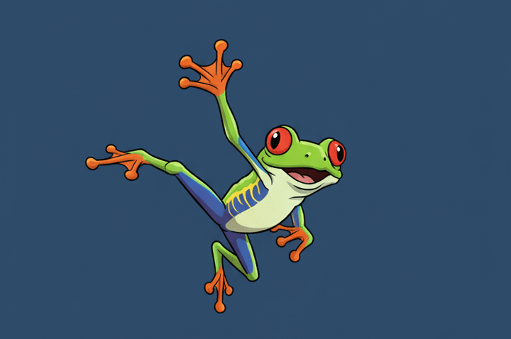
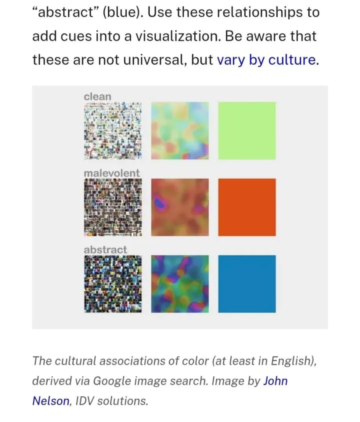

🪷The Pond #5: Take the leap!
Hello my dear frosches! 🐸
by Ada Homolova · November 17, 2025

Hello my dear frosches! 🐸
Another month, another conference. Writing this from WebSummit in Lisbon! A very different experience than usual: 70,000 people, thousands of startups, and investors everywhere, ready to make deals.
While conference experience was overwhelming, I did enjoyed the city, the warmth, the coast and my birthday celebration with lovely people I rarely see in person.
Fortunately, this is my last trip of the year. From here on out, it’s all about home, warm socks, and a cozy fireplace 🔥.
We’ve got some updates, so let’s dive right in 👇
New at The Pond

🛠️ Recently, I came across a wonderfully simple technique how to make good color schemes. I have adapted it into a tool you can use too! Check out the Color Analyzer.
🗞️ I made a little robot that reads The Economist RSS feeds for me and sends me a newsletter email once a week. Want your own little newsletter robot? Clone the github repository and make it your own!
Tutorials
🚢 How to track ships like a Pro by Fernanda Buffa from the Pulitzer Center
🤖 Find hidden APIs using AI and catch some Pokémons while you are at it by Rui Barros
🖌️ Understand SVG paths with this beautiful and interactive tutorial by Nanda Syahrasyad
Databases
🗺️ Dynamic world - is a near realtime 10m resolution global land use land cover dataset, freely available and openly licensed.
🇪🇺 EU Databases - my collection of databases useful for your research!
⚡ lmarena.ai - a database of LLMs that helps you to compare LLMs for your task
Would you like to feature your work in this newsletter? Drop me an email.
That’s it for now!
With 💚 and 🐸,
Ada